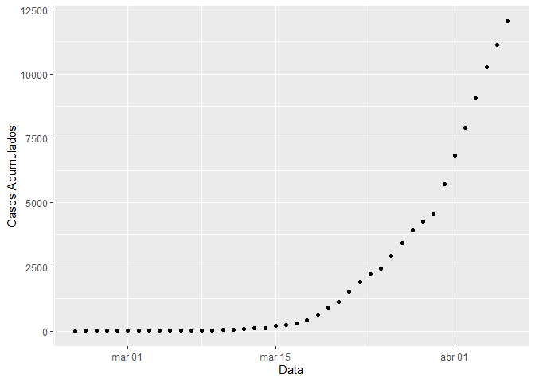
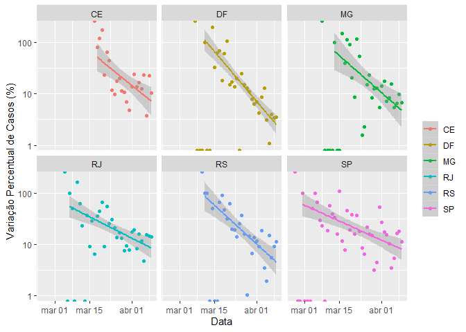

coronavirusbrazil
0.0.0.9000
The coronavirusbrazil package provides a tidy format dataset of the 2019 Novel Coronavirus COVID-19 (2019-nCoV) epidemic for Brazil. The raw data pulled from Ministério da Saúde and brasil.io.
This repository was inspired by the RamiKrispin/coronavirus package repository.
Installation
You can install the released version of coronavirusbrazil from CRAN with:
Usage
The package contains the following datasets:
library(coronavirusbrazil)
data("coronavirus_br")
head(coronavirus_br)
#> date cases deaths delta_cases delta_deaths days_gt_10 days_gt_100
#> 1 2020-02-25 0 0 NA NA NA NA
#> 2 2020-02-26 1 0 1 0 NA NA
#> 3 2020-02-27 1 0 0 0 NA NA
#> 4 2020-02-28 1 0 0 0 NA NA
#> 5 2020-02-29 2 0 1 0 NA NA
#> 6 2020-03-01 2 0 0 0 NA NA
data("coronavirus_br_states")
head(coronavirus_br_states)
#> # A tibble: 6 x 8
#> # Groups: state [1]
#> state date cases deaths delta_cases delta_deaths days_gt_10 days_gt_100
#> <chr> <date> <dbl> <dbl> <dbl> <dbl> <dbl> <dbl>
#> 1 RO 2020-02-25 0 0 0 0 NA NA
#> 2 RO 2020-02-26 0 0 0 0 NA NA
#> 3 RO 2020-02-27 0 0 0 0 NA NA
#> 4 RO 2020-02-28 0 0 0 0 NA NA
#> 5 RO 2020-02-29 0 0 0 0 NA NA
#> 6 RO 2020-03-01 0 0 0 0 NA NAplot_coronavirus_states(coronavirus_br_states, filter_state = c("RJ", "SP", delta = TRUE, log_scale = TRUE))
#> Scale for 'y' is already present. Adding another scale for 'y', which will
#> replace the existing scale.
data("coronavirus_br_cities")
head(coronavirus_br_cities)
#> # A tibble: 6 x 11
#> date state city place_type cases deaths is_last estimated_popul~
#> <date> <chr> <chr> <chr> <dbl> <dbl> <lgl> <dbl>
#> 1 2020-04-03 AC Acre~ city 9 0 TRUE 15256
#> 2 2020-04-03 AC Port~ city 1 0 TRUE 18504
#> 3 2020-04-03 AC Rio ~ city 36 0 TRUE 407319
#> 4 2020-04-03 AM Anori city 1 0 TRUE 21010
#> 5 2020-04-03 AM Boca~ city 1 0 TRUE 34308
#> 6 2020-04-03 AM Care~ city 1 0 TRUE 30225
#> # ... with 3 more variables: city_ibge_code <dbl>,
#> # confirmed_per_100k_inhabitants <dbl>, death_rate <dbl>There are also geospatial datasets avaiable:
dplyr::glimpse(spatial_br_states)
#> Observations: 27
#> Variables: 13
#> $ id <chr> "AC", "AL", "AM", "AP", "BA", "CE", "DF", "ES", "GO", ...
#> $ name <chr> "Acre", "Alagoas", "Amazonas", "Amapá", "Bahia", "Cear...
#> $ uf <chr> "AC", "AL", "AM", "AP", "BA", "CE", "DF", "ES", "GO", ...
#> $ codigo <int> 12, 27, 13, 16, 29, 23, 53, 32, 52, 21, 31, 50, 51, 15...
#> $ regiao <chr> "Norte", "Nordeste", "Norte", "Norte", "Nordeste", "No...
#> $ geometry <list> [<-70.470805, -9.213489>, <-36.622412, -9.514914>, <-...
#> $ date <date> 2020-04-02, 2020-04-02, 2020-04-02, 2020-04-02, 2020-...
#> $ cases <dbl> 43, 18, 229, 11, 267, 550, 370, 120, 73, 71, 370, 53, ...
#> $ deaths <dbl> 0, 1, 3, 0, 3, 20, 4, 1, 1, 1, 4, 1, 0, 1, 1, 9, 4, 4,...
#> $ delta_cases <dbl> 0, 0, 29, 0, 21, 106, 15, 24, 2, 19, 56, 2, 9, 6, 1, 1...
#> $ delta_deaths <dbl> 0, 0, 0, 0, 1, 12, 1, 1, 0, 0, 1, 0, 0, 0, 0, 1, 0, 1,...
#> $ log_cases <dbl> 1.633468, 1.255273, 2.359835, 1.041393, 2.426511, 2.74...
#> $ log_deaths <dbl> -Inf, 0.0000000, 0.4771213, -Inf, 0.4771213, 1.3010300...
#plot(spatial_br_states)dplyr::glimpse(spatial_br_cities)
#> Observations: 553
#> Variables: 7
#> $ date <date> 2020-04-03, 2020-04-02, 2020-04-03, 2020-04-02, 2020-04...
#> $ city <chr> "Abaetetuba", "Açailândia", "Acrelândia", "Açu", "Afonso...
#> $ cases <dbl> 1, 1, 9, 1, 1, 1, 1, 1, 3, 1, 1, 1, 1, 3, 0, 3, 3, 2, 9,...
#> $ deaths <dbl> 0, 0, 0, 0, 0, 0, 0, 0, 0, 0, 0, 0, 0, 0, 0, 0, 0, 0, 0,...
#> $ geometry <list> [<-48.87880, -1.72183>, <-47.50040, -4.94714>, <-66.897...
#> $ log_cases <dbl> 0.0000000, 0.0000000, 0.9542425, 0.0000000, 0.0000000, 0...
#> $ log_deaths <dbl> -Inf, -Inf, -Inf, -Inf, -Inf, -Inf, -Inf, -Inf, -Inf, -I...
#plot(spatial_br_states)Data Sources
- States: Ministério da Saúde
- Cities: brasil.io
Links
- Browse source code at
https://github.com/mralbu/coronavirusbrazil - Report a bug at
https://github.com/mralbu/coronavirusbrazil/issues
License
- Full license
- MIT + file LICENSE
Developers
- Marcelo Albuquerque
Author, maintainer